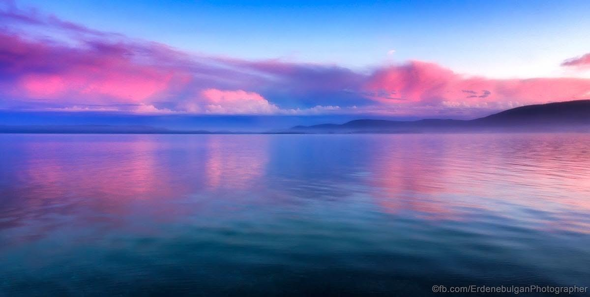
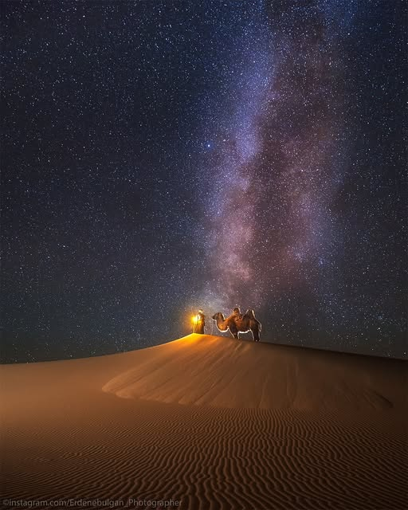
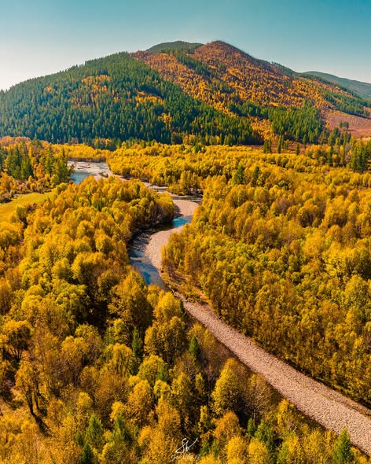
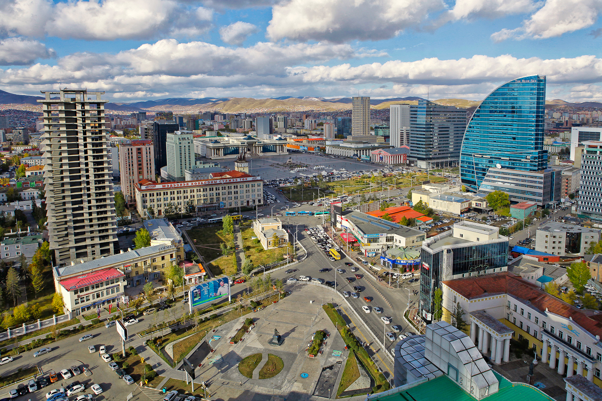
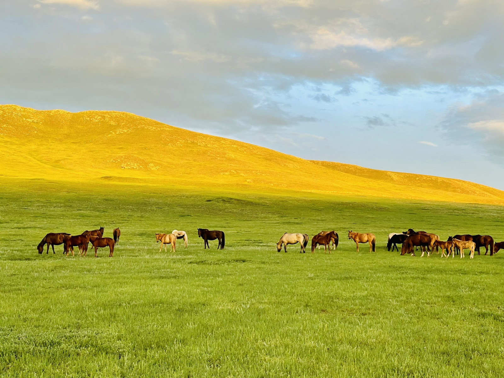

Уулын өглөө
Хэнтийн нурууны мананцар.
Зураг дээр дарж эсвэл Tab → Enter дарж эргүүлнэ.
Хэнтийн нурууны мананцар.

Хөвсгөлийн намуухан үдэш.

Хонгорын элсний шөнө.

Тэрэлжийн намрын өнгө.

Улаанбаатарын орой.

Дорнодын уудам тал.